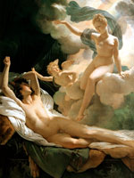

Ірида, в грецькій міфології уособлення і богиня веселки, крилата вісниця Зевса і Гери, дочка Тавмант і океаніди Електри, сестра Гарпій і Арки. Головна роль Іриди - бути вісницею богів, доручення яких вона розносить зі швидкістю вітру по землі, в морські глибини і навіть в пекло.
Як богиня веселки, що є після дощу в хмарі або в бризках води, Ірида стояла близько до морських божествам. У давньогрецьких поетів і граматик вона є як служниці дружини Зевса Гери і виконавиці її доручень, подібно до того як Гермес грає таку ж роль при Зевса.
За поданням древніх греків, веселка була тим мостом, який з'єднував небо і землю. Коли оформилася олімпійська релігія, Ірида стала шануватися, так само як і Гермес, посередницею між небожителями і світом людей. Ірида виконувала веління Зевса беззаперечно, не додаючи власних змін, що відрізняло її від Гермеса.
Зображення Іриди можна було зустріти зазвичай в сюжетних малюнках, пов'язаних з міфами про Гері. Богиню веселки представляли у вигляді крилатої дівчини. Зображується Ірида найчастіше летить, з розпростертими великими крилами, з кадуцеєм або чашею в руці. Також звичайним атрибутом її був глечик з дощовою водою. За викладу Алкея, одного з найбільших ліричних поетів Греції, існує міф, що від бога західного вітру Зефіру Ірида народила Ероса.